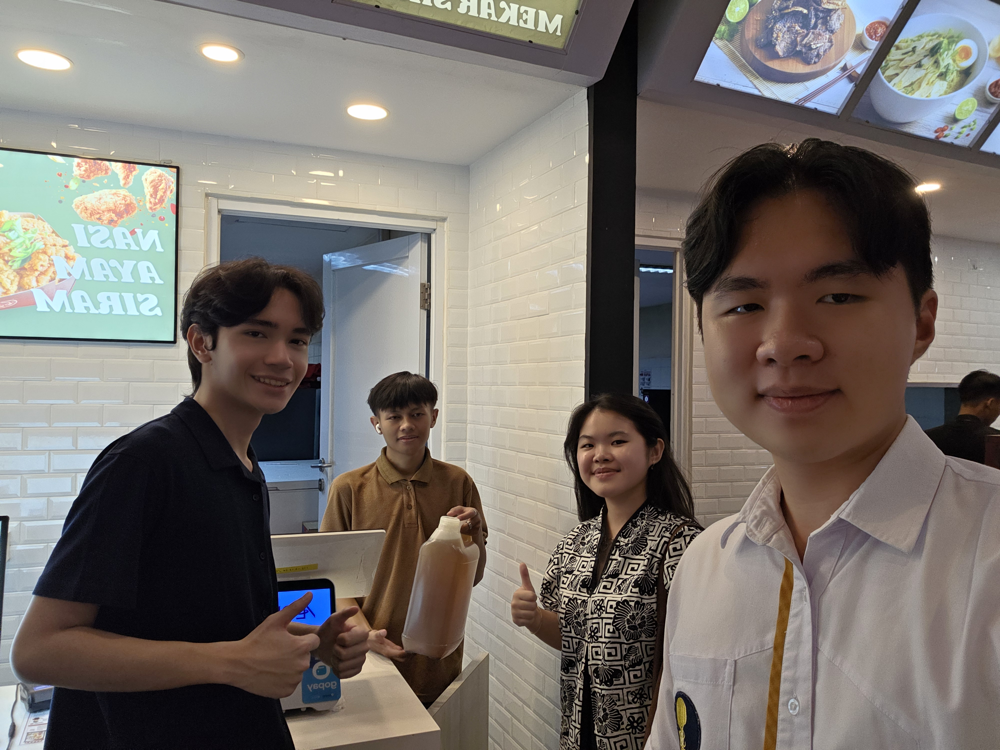

Partnering with local businesses and MSMEs to scale up our UCO collection and build a sustainable circular economy.

Oil Runs is a Jelantah Jenius initiative that works directly with MSMEs, food businesses, restaurants, and local sellers to collect their used cooking oil.
By building partnerships and regularly collecting UCO, we aim to increase our collection volume while helping businesses manage their waste responsibly and supporting a more sustainable circular economy.
Got a business? Join us and get exciting incentives!
Contact Us